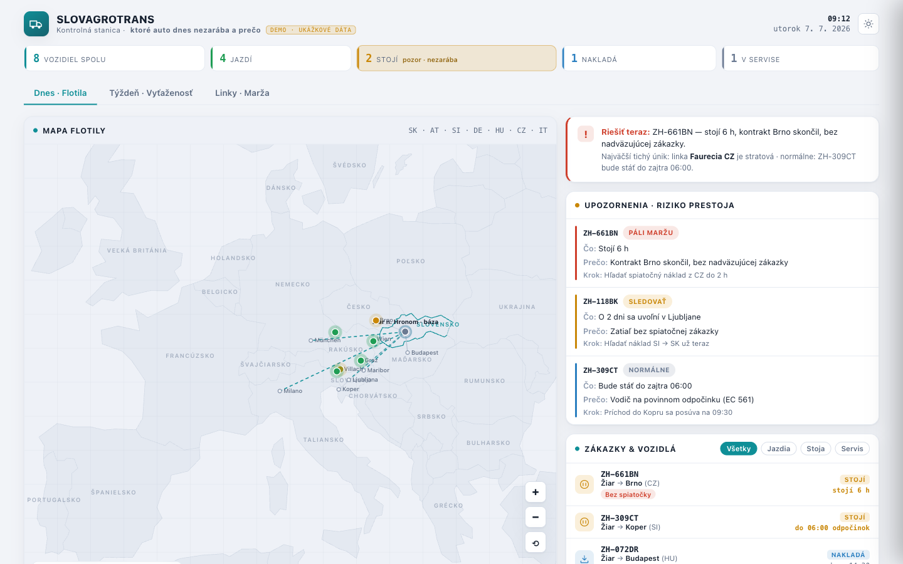

2026 · Concept demo · Sample data
Dispatch Board
A control station for a small haulage fleet, built around a single question printed in the header: which truck isn't earning today, and why. Eight vehicles, a map of central Europe, and a panel that names the problem and the next action.

Every alert ends in a verb
Fleet software usually shows you a table and lets you work out the implication. This inverts it: each alert is three labelled lines — Čo (what), Prečo (why), Krok (next step) — so the dispatcher gets a diagnosis and an instruction rather than a data point.
- The headline problem is separated out. One red-bordered "Solve now" card sits above the alert list, naming the single worst thing happening right now.
- Counters as a filter bar. Five states across the top — total, driving, idle, loading, in service. The problematic one is highlighted amber and is the one you click.
- Severity as a word, not just a colour. Each alert carries a plain-language tag: burning margin, watch, normal.
- Three time horizons as tabs. Today by fleet, week by utilisation, routes by margin — the same data at the three intervals a dispatcher actually thinks in.
- Restrained map. Country fills are near-white so vehicle pins and route lines are the only saturated things on it.
Palette
#0e1520 ink
#eab13a warning
#e35a4a critical
#f7f9fc surface
A concept, not a production system. The board labels itself as a demo on sample data — every vehicle, route, contract and figure in it is invented.